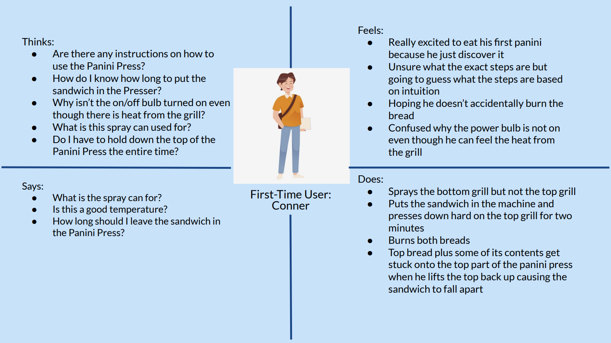
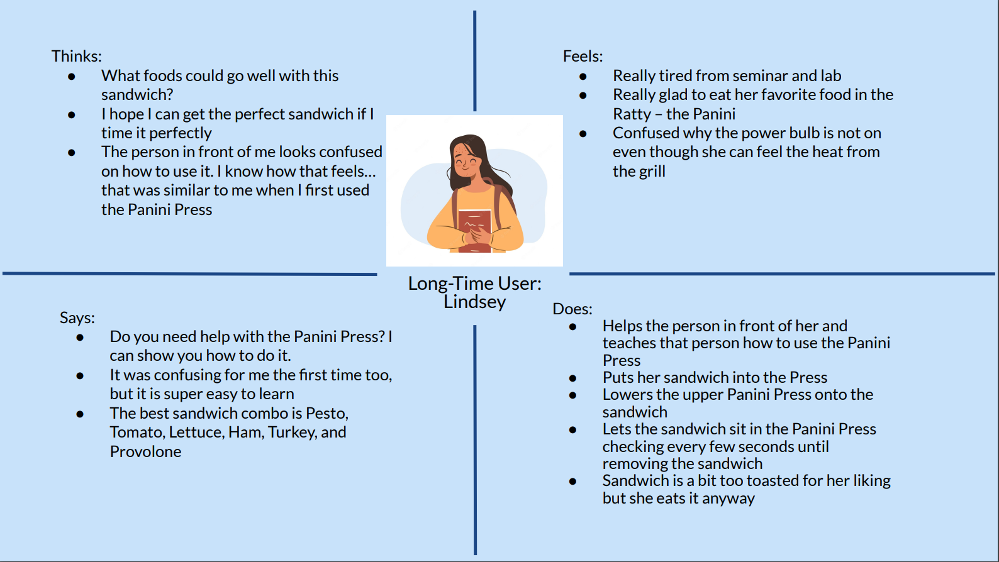

This project was for CSCI1300: User Interface and User Interaction focusing on Personas and Story Boarding. Our task was to observe real users interacting with an interface, interview these individuals about their experiences, create personas based on these users, and illustrate a storyboard for one of your personas. I choose to analyze the user interaction with the Panini Press.
A Panini Press is a machine that holds a sandwich together by compacting it and also heating the outer layers of the sandwich. This is especially useful when the user wants to make a panini or grilled sandwich, but doesn’t want to use a griddle or frying pan.
There are 5 main components to the Panini Press: the on/off bulb, temperature knob, handle, panini press top, grills. There are also 2 vital accessories: the non-stick cooking oil and the tongs.
The user flow sets the temperature using the temperature knob in which the on/off bulb will light up. The user sprays the grills using the non-stick cooking oil, uses the tongs to pick up the sandwich, and places it onto the grills. Next, the user uses the handle to lower the panini press top and let it sit ontop of the sandwich until the user feels satisfied with the amount of grill. The user then uses the handle to lift the panini press top, uses the tongs to remove the sandwich from the grill, and places their grilled sandwich onto their plate.
For the overall experience, I noticed that there was a general trend that users really liked how the Panini Press grilled their sandwich really quickly – around 20 seconds. However, there were some roadbumps in the user experience relating to the timing, the temperature knob, and spraying the grill.
How was your experience using the Panini Press?
How often do you use the Panini Press?
What do you like about the Panini Press?
What do you dislike about the Panini Press?
Would you change anything about the Panini Press?
Does the Panini Press accomplish your user need?
Connor is a freshman at Brown University and just discovered that there is a Panini Press Station at the Ratty. He is excited to use the Paninin Press, but quickly gets confused on how to use it because there are no instructions.
Some of the interface problems that Conor face are: there was no UI explaining how long the sandwich should in, there is no general guide of what each temperature will result in the sandwich, the on/off bulb is off even though the Panini Press is on, and Connor can’t see the state of his sandwich when he put it in the Panini Press.
Connor represents the users for the Panini Press because all users of the Panini Press were at some point a first time user. Therefore, this persona is a very common persona and many users may have had the same first experience as our Persona #1 did. This Persona gives a perspective of what the first-time user may experience and the interface problems that that person may have faced.
Lindsey is a senior at Brown University and is a long-time user of the Panini Press. She loves using the Panini Press but still faces some problems while using it.
The On/Off bulb is off even though she knows that it is on and has the temperature set. There is no UI, such as a timer or clock, to help Lindsey know how long she should leave the sandwich in the Panini Press. Lindsey can not see the state of the sandwich because the visibility gets closed by the Panini Press top, so she can’t see if the sandwich is not grilled enough, grilled just right, or burnt.
Lindsey represents the users of the Panini Press because all the users eventually have a good understanding of the Panini Press works after using it a couple of times. This persona gives a perspective of experienced users who know how to use the Panini Press but still face interface problems with it.
From the observations and user interviews, I was able to understand the user interface and user experience of the Panini Press. Overall, the Panini Press is a great tool that compacts a sandwich and toasts it. Its strength is that it is really fast in heating up the sandwich. Its weaknesses are that there are no indications of the timing for when the sandwich is ready, the on/off bulb is broken, and sometimes people didn’t know to spray the top side of the Panini Press with cooking oil. However, overall, it is a great tool that fulfills the users' needs and most users recommend this product.